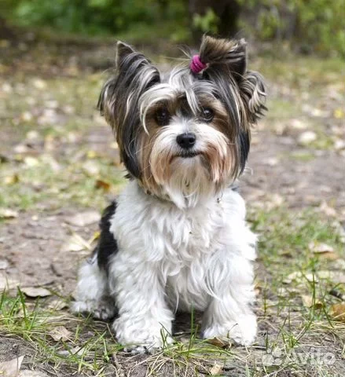
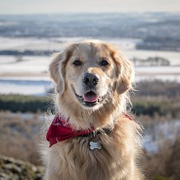
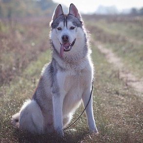

Бивер-йоркширский терьер
Бивер-йоркширский терьер - маленькая, но очень активная и любопытная собачка. Отличается ярким окрасом и дружелюбным характером.
Читать статью о Бивер-йоркширском терьереЗолотистый ретривер
Золотистый ретривер - крупная порода собак с очень добрым и спокойным нравом, известная своей преданностью и любовью к детям.
Читать статью о Золотистом ретривереХаски
Хаски - порода собак, отличающаяся яркими голубыми глазами и невероятной выносливостью. Любит активные игры и общение.
Читать статью о Хаски